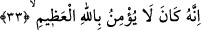
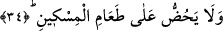
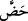

33. Çünkü o, ulu Allah’a îman etmezdi,
“Çünkü o…” Burada sanki “neden o böyle şiddetli bir azapla azap görüyor” diye bir
soru soruluyor ve bu soruya Allah tarafından cevap veriliyor: “Ulu Allah’a îman
etmiyordu.” Allah Teâlâ’nın büyüklük ve yücelik ile vasfedilmesi, büyüklüğe sâdece
O’nun lâyık olduğuna işâret etmek ve büyüklüğü kendi nefsine izâfe eden kimsenin en
büyük cezâya çarpılacağına işâret etmek içindir.
34. Yoksulu doyurmaya teşvik etmezdi.
Âyette geçen “
/hadd” kelimesi, “herhangi bir fiili hırs ile yapmaya teşvik etmek”
demektir. Râğıb İsfahânî’nin ifâdesine göre “hadd” tıpkı “hass” gibi birisini harekete
geçirmek anlamındadır. Ancak “hass” herhangi bir kimseyi sevkederek ve yürüterek
gerçekleşirken “hadd” böyle olmaz. “Hadd” aslında sözlük anlamı olarak “hayvanları
bol otlu ve sulu olan yere sevketmek” demektir. Bu açıklamalar ışığında âyetin mânâsı;
“O kimse -kendi malından vermesi ve dağıtması bir yana- ne âile fertlerini ve ne de
başkalarını fakiri yedirmeye teşvik etmez” demektir. Buna göre âyetteki “taâm”
kelimesinden maksad bizzat yemeğin kendisi olmakla birlikte kelime içerisine “i’tâ” ya
da “bezl” fiili gizlenmiş olur. Çünkü teşvik ve harekete geçirme aslında isimlere taalluk
etmez, tam tersine bunlar fiillere bağlanır. Yemek yoksula, kendisinin yemeğe nisbeti
olması açısından izâfe olunmuştur. Âyete şu şekilde mânâ vermek de mümkündür:
“Onlar âile ferdlerini ve başkalarını fakiri yedirmeye teşvik etmezler.” Buna göre
“taam” kelimesi, isim olarak “it’am: yedirmek” yerine kullanılmış olur. Bu tıpkı “atâ:
verilen şey” kelimesinin “i’tâ: vermek” fiilinin yerine kullanılması gibi olur. Şu hâlde,
bu son duruma göre kelime mef’ûlüne izâfe edilmiş olur.
Âyette bizâtihî “yedirme” fiilinin değil de “yedirmeye teşvik”in zikredilmesinin bir
maksadı vardır. Bununla, teşviki terkeden kişi âyette belirtilen derekeye düşerse,
bizâtihi yedirme fiilini terkeden kişinin durumunun acaba nasıl olacağının bilinmesi ve
mukayese
edilmesi
kasdedilmiştir.
Bir
başka
ifâdeyle;
fakiri
yedirmenin
terkedilmesinin, şiddetli cezâya çarptırılma açısından çok daha şiddetli ve beter olduğu
belirtilmiştir.
Âyette fakirlerin mahrum bırakılması, inkâra karine kılınmıştır. Çünkü Allah, fakirin
yedirilmesini teşvik edilmemesini bir önceki âyetteki Allah’a inanmamaya atfetmiştir.
Bu atıf, fakiri yedirmeyi teşvik etmeme fiilinin büyük bir cürüm ve günah olduğuna